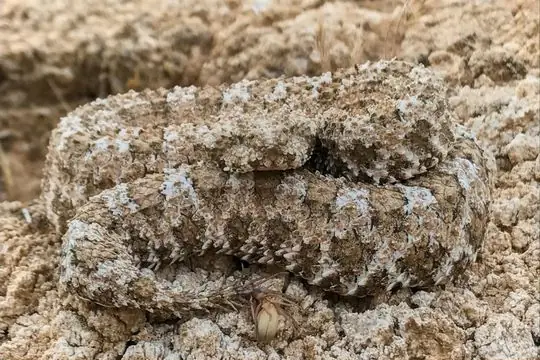

Snakes of Iran
80 snake species are recorded in Iran in SnakeList: 31 venomous and 49 non-venomous, from 7 families.
- 80species
- 31venomous
- 49non-venomous
- 7families
Species
Showing 80 species
 Alburzi ViperVipera eriwanensis
Alburzi ViperVipera eriwanensis Andreas' RacerDolichophis andreanus
Andreas' RacerDolichophis andreanus Annulated Sea SnakeHydrophis cyanocinctus
Annulated Sea SnakeHydrophis cyanocinctus Arabian Gulf Sea SnakeHydrophis lapemoides
Arabian Gulf Sea SnakeHydrophis lapemoides Arabian Sand BoaEryx jayakari
Arabian Sand BoaEryx jayakari Armenian ViperMontivipera raddei
Armenian ViperMontivipera raddei Ashkhabad Dwarf RacerEirenis medus
Ashkhabad Dwarf RacerEirenis medus Asian RacerHemorrhois nummifer
Asian RacerHemorrhois nummifer Asian sand viperEristicophis macmahoni
Asian sand viperEristicophis macmahoni Awl-headed SnakeLytorhynchus diadema
Awl-headed SnakeLytorhynchus diadema Barred Wolf SnakeLycodon striatus
Barred Wolf SnakeLycodon striatus Black-headed Snake (nigriceps)Telescopus nigriceps
Black-headed Snake (nigriceps)Telescopus nigriceps Cat SnakeTelescopus fallax
Cat SnakeTelescopus fallax Caucasian pitviperGloydius caucasicus
Caucasian pitviperGloydius caucasicus Central Asian CobraNaja oxiana
Central Asian CobraNaja oxiana Central Asian Sand BoaEryx elegans
Central Asian Sand BoaEryx elegans Collared Dwarf SnakeEirenis collaris
Collared Dwarf SnakeEirenis collaris Common Cat SnakeBoiga trigonata
Common Cat SnakeBoiga trigonata Common SeasnakeHydrophis schistosus
Common SeasnakeHydrophis schistosus Crowned Dwarf RacerEirenis coronella
Crowned Dwarf RacerEirenis coronella Dark-headed Dwarf Racer (nigrofasciatus)Eirenis nigrofasciatus
Dark-headed Dwarf Racer (nigrofasciatus)Eirenis nigrofasciatus Dark-headed Dwarf Racer (persicus)Eirenis persicus
Dark-headed Dwarf Racer (persicus)Eirenis persicus Derafshi SnakeLytorhynchus ridgewayi
Derafshi SnakeLytorhynchus ridgewayi Desert CobraWalterinnesia aegyptia
Desert CobraWalterinnesia aegyptia Diadem SnakeSpalerosophis diadema
Diadem SnakeSpalerosophis diadema Dione SnakeElaphe dione
Dione SnakeElaphe dione Dotted Dwarf SnakeEirenis punctatolineatus
Dotted Dwarf SnakeEirenis punctatolineatus Dwarf Sand BoaEryx miliaris
Dwarf Sand BoaEryx miliaris- No photo yetFahimi's ground snakePersiophis fahimii
 Field's Horned ViperPseudocerastes fieldi
Field's Horned ViperPseudocerastes fieldi Forskal Sand SnakePsammophis schokari
Forskal Sand SnakePsammophis schokari- No photo yetGünther's sea snakeMicrocephalophis cantoris
 Halys Pit ViperGloydius halys
Halys Pit ViperGloydius halys- No photo yetHardwicke's Spine-bellied SeasnakeHydrophis hardwickii
 Hook-snouted Worm SnakeMyriopholis macrorhyncha
Hook-snouted Worm SnakeMyriopholis macrorhyncha Indian Desert Tiger SnakeTelescopus rhinopoma
Indian Desert Tiger SnakeTelescopus rhinopoma- No photo yetIranian Mountain Steppe ViperVipera ebneri
- No photo yetIranian Worm SnakeXerotyphlops wilsoni
- No photo yetKerman Dwarf SnakeEirenis kermanensis
- No photo yetLaki Blind SnakeXerotyphlops luristanicus
 Large Whip Snake (jugularis)Dolichophis jugularis
Large Whip Snake (jugularis)Dolichophis jugularis Latifi's ViperMontivipera latifii
Latifi's ViperMontivipera latifii Levantine ViperMacrovipera lebetinus
Levantine ViperMacrovipera lebetinus Maynard's Longnose Sand SnakeLytorhynchus maynardi
Maynard's Longnose Sand SnakeLytorhynchus maynardi Moila SnakeMalpolon moilensis
Moila SnakeMalpolon moilensis Narrow-striped Dwarf SnakeEirenis decemlineatus
Narrow-striped Dwarf SnakeEirenis decemlineatus Ornate Sea SnakeHydrophis ornatus
Ornate Sea SnakeHydrophis ornatus Palestine Kukri SnakeRhynchocalamus satunini
Palestine Kukri SnakeRhynchocalamus satunini Persian Horned ViperPseudocerastes persicus
Persian Horned ViperPseudocerastes persicus- No photo yetPersian KraitBungarus persicus
 Persian Rat SnakeZamenis persicus
Persian Rat SnakeZamenis persicus Razi's ViperMacrovipera razii
Razi's ViperMacrovipera razii- No photo yetRechinger's Dwarf RacerEirenis rechingeri
 Red Sand BoaEryx johnii
Red Sand BoaEryx johnii Red-Bellied RacerDolichophis schmidti
Red-Bellied RacerDolichophis schmidti Sand Boa (jaculus)Eryx jaculus
Sand Boa (jaculus)Eryx jaculus Saw-scaled ViperEchis carinatus
Saw-scaled ViperEchis carinatus Short Sea SnakeHydrophis curtus
Short Sea SnakeHydrophis curtus- No photo yetSinai dwarf racerEirenis coronelloides
 Sindh Thread SnakeMyriopholis blanfordi
Sindh Thread SnakeMyriopholis blanfordi Sistan Sand BoaEryx sistanensis
Sistan Sand BoaEryx sistanensis Soosan ViperTelescopus tessellatus
Soosan ViperTelescopus tessellatus
Spider-tailed ViperPseudocerastes urarachnoides Spotted Desert RacerPlatyceps karelini
Spotted Desert RacerPlatyceps karelini Spotted Whip SnakeHemorrhois ravergieri
Spotted Whip SnakeHemorrhois ravergieri Steppe Ribbon RacerPsammophis lineolatus
Steppe Ribbon RacerPsammophis lineolatus Urartian Rat SnakeElaphe urartica
Urartian Rat SnakeElaphe urartica- No photo yetVan Dwarf RacerEirenis thospitis
 Viperine Sea SnakeHydrophis viperinus
Viperine Sea SnakeHydrophis viperinus Wadi RacerPlatyceps rhodorachis
Wadi RacerPlatyceps rhodorachis Wagner's ViperMontivipera wagneri
Wagner's ViperMontivipera wagneri Western Dwarf RacerEirenis occidentalis
Western Dwarf RacerEirenis occidentalis Yellow Sea SnakeHydrophis spiralis
Yellow Sea SnakeHydrophis spiralis Zebra SnakeSpalerosophis microlepis
Zebra SnakeSpalerosophis microlepis- No photo yetEirenis rafsanjanicus
- No photo yetEirenis yassujicus
- No photo yetPlatyceps schmidtleri
 Rhynchocalamus levitoni
Rhynchocalamus levitoni- No photo yetSphalerosophis microlepis
- No photo yetWalterinnesia morgani
No snakes in Iran match.
Iran’s snakes in numbers
- Families: Colubridae 40, Viperidae 14, Elapidae 13, Boidae 6, Psammophiidae 3, Leptotyphlopidae 2, Typhlopidae 2.
- 14 are recorded in no other country in SnakeList: Fahimi's ground snake, Iranian Mountain Steppe Viper, Iranian Worm Snake, Kerman Dwarf Snake, Laki Blind Snake, Persian Krait, Razi's Viper, Rechinger's Dwarf Racer, Zebra Snake, Eirenis rafsanjanicus, Eirenis yassujicus, Platyceps schmidtleri and 2 more.